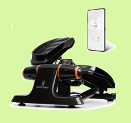

Evaluer mes compétences
Les exercices proposés doivent vous permettre de vous familiariser avec les questionnements possibles sur vos nouvelles connaissances.

Déterminer les caractéristiques d'une chaine d'information
Exercice 1 : Déterminer les caractéristiques d'une chaine de mesure
En exploitant la chaine de mesure représentée ci-dessous et le graphique représentant les signaux analogique et numérique:
- Donner les caractéristiques de la grandeur physique d'entrée du diviseur de tension;
- Donner les caractéristiques de la grandeur physique d'entrée dans le C.A.N.;
- Donner les caractéristiques de la grandeur physique de sortie du C.A.N.;
- Sur combien de bits travaille le C.A.N., combien de valeurs peut-il renvoyer et quelle sa résolution ?
- Déterminer la période d'échantillonage et la fréquence;
- Le temps d'échantillonage étant de 4 ms, combien de bits seront mémorisés par le système?
- Sur une durée de 5 minutes, combien de bits devront être mémorisés par le système? Exprimer ce résultat en octet.


Exercice 1 : Réponses
Retour en haut de la page
Exercice 2 : Déterminer les caractéristiques d'une chaine de mesure
L’article 3 du décret n° 2019-1082 du23 octobre 2019 relatif à la réglementation des engins de déplacement personnel (E.D.P.) motorisé (non thermique) impose une vitesse maximale de 25 km/h. Un des moyens utilisés est un capteur à lame souple (ILS ou Reed). Lorsqu’un aimant passe devant le capteur, le circuit électrique est fermé. Le nombre de passage de l’aimant en fonction du temps est donc proportionnel à la vitesse de l’engin. L’aimant est placé sur un rayon de la roue et le capteur est solidaire du cadre de l’engin. A chaque tour, une impulsion électrique est générée.
En exploitant la chaine de mesure représentée ci-dessous et les graphiques fournis:
- Relever les valeurs de "Th", "Tb" et "T";
- A partir du chronogramme fourni, déterminer la vitesse de rotation de la roue en tr/min et la vitesse de l'engin;
- Déterminer l'équation de la courbe qui met en relation la vitesse en tr/s et la valeur "C_mot" renvoyée par le C.A.N.;
- Calculer la valeur "C_mot" pour une vitesse de l'engin de 25 km/h.


Exercice 2 : Réponses
Retour en haut de la page
Exercice 3: Transmettre des informations

Un stepper est un dispositif qui permet d’effectuer une activité physique qui sollicite les muscles nécessaires à la montée des marches d’un escalier. Ce modèle communique avec une application sur téléphone mobile au travers des modules de communication Bluetooth. L'information transmise sera essentiellement le nombre de montée de "marches" . La liaison utilisée entre le traitement et le module Bluetooth est une liaison série la vitesse de transmission, en Bauds (bits par seconde) de 9600 Bd.
La constitution de la trame "ID Stepper" est :
- le début de transmission « bit start » ( « 0 »);
- le nombre de bits transmis est de 8 bits;
- pas de bit de parité;
- la fin de la transmission « bit Stop » ( « 1 »);
- l’ordre de transmission: on commence par le bit de poids faible jusqu'au bit de poids fort;
- le niveau de tension TTL niveau haut 3 V, niveau bas 0 V.

En exploitant les données ci-dessus:
- Convertir l'identifiant « ID Stepper » 45 (en base décimale) en binaire sur 8 bits;
- Compléter le chronogramme représentant le début de la trame de transmission série qui correspond à l’ID Stepper 45.

Exercice 3 : Réponses
Retour en haut de la page
Exercice 4 : Transmettre des informations
Un système de régulation de température est basé sur le composant LM35. La chaine de mesure et la conversion de l'information sont décrites figures 1 et 2. Le protocole de communication utilisé est décrit figure 3.
En exploitant ces informations :
- En respectant la description du protocole, déterminer la valeur décimale correspondant au chronogramme de la figure 4;
- Calculer le température correspondante


Exercice 4 : Réponses
Retour en haut de la page
Exercice 5: Transmettre des informations
Un dispositif d’acquisition du signal sur une éolienne véhicule les informations des capteurs de vitesse et direction du vent sur un bus CAN en hexadécimal. Un logiciel (PCANView) nous permet de lire les trames envoyées. Sur l'image ci-dessous, les octets DATA7 (LSB) et DATA6 (MSB) représentent l'information de vitesse de vent apparent les octets DATA5 (LSB) et DATA4 (MSB) représentent l'information d'angle de vent apparent.

Dans la trame 09FD0201h ci-dessus :
- Identifier et relever les valeurs des champs qui contiennent les données de la vitesse du vent et de son orientation;
- Quelle est la valeur décimale de la vitesse du vent dans cette trame ? Exprimer votre résultat en m/s;
- Quelle est la valeur décimale de l’orientation du vent dans cette trame ? Exprimer votre résultat en degrés.
Exercice 5 : Réponses
Retour en haut de la page